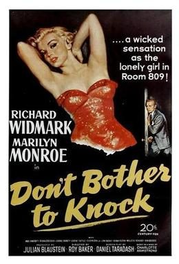

Don't Bother to Knock
Starring: Richard Widmark, Marilyn Monroe, Anne Bancroft
Director: Roy Ward Baker
Writer: Daniel Taradash
Producer: Julian Blaustein
Don't Bother to Knock is a 1952 American psychological thriller film starring Richard Widmark and Marilyn Monroe. It was directed by Roy Ward Baker, with a screenplay by Daniel Taradash based on the 1951 Charlotte Armstrong novel Mischief.
Trivia
- Producer Julian Blaustein and director Roy Baker wanted to title the film Whistle Bait, but the title was rejected by the Breen Office.
- Twentieth Century-Fox had planned to title the film Night Without Sleep but became concerned about the implications of the title appearing alongside Monroe's name, necessitating the change to Don't Bother to Knock.
- A separate film titled Night Without Sleep, also directed by Roy Baker, was released soon after Don't Bother to Knock.
Previous Showings
1 Run • 1 Festival
461 tickets sold
All runs on record (1):
- July 29 - 30, 2026 · 461 ticketsSummer 2026 including the Films of Marilyn Monroew/ This Gun for Hire